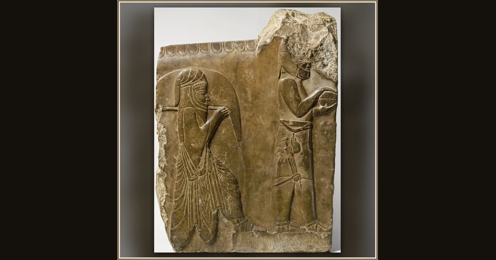

Relief: two servants bearing food and drink
Achaemenid · ca. 358–338 BCE · met
An Achaemenid relief of two servants carrying food and drink, like the servant Darius ordered to say at every dinner, “Master, remember the Athenians” (5.105.2) Explore its place in Herodotus's Histories, Book V, chapter 289.